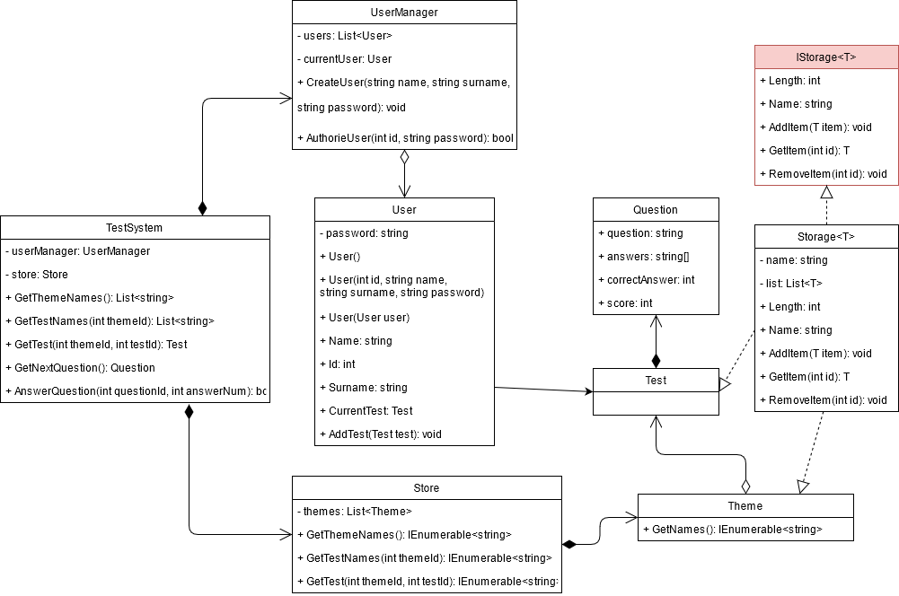

Тема: КОНСТРУКТОРИ.МОДИФИКАТОРЫ ДОСТУПУ В C# И UML. ДІАГРАМИ КЛАСІВ. ВІДНОШЕННЯ МІЖ КЛАСАМИ
Мета: Здійснити об’єктно-орієнтоване проектування з урахуванням модифікаторів доступу в C# и UML і добавлення конструкторів у діаграму класів та реалізація їх у програмному коді. Вивчити особливості використання різних видів конструкторів. Доповнити програму конструкторами різних видів
- Постановка задачі:
- 1. Доповнити інтерфейси та реалізації класів методами-конструкторами класів (використати конструктори по умовчанню, ініціалізації (введення значень з клавіатури, завдання їх за виразами та через виклик інших методів-членів класу).
- 2. Протестувати програму, демонструючи послідовність викликів конструкторів виведенням на екран повідомлень про створення об’єктів
-
- 3. Продемонструвати створення об’єктів за
допомогою різних видів конструкторів:
- 3.1. через ініціалізацію значень атрибутів класів списком аргументів, використовуючи конструктор ініціалізації;
- 3.2. через присвоєння одних об’єктів іншим того самого типу, використовуючи конструктор копіювання;
- 3.3. створення об’єкта за допомогою конструктора за замовчуванням.
UML-діаграма класів проекту
Таблиця класів
Файлова структура проекту
Програмні коди класів з конструкторами
Програмний код класу AbstractUser
Програмний код класу Storage
Програмний код Program
Програмний код класу Program
Програмний код класу Lab2_Contstructor_Tester

Результат роботи програми
Папка з проектом
Папка з проектомЗапуск exe-файлу
Завантажити програму